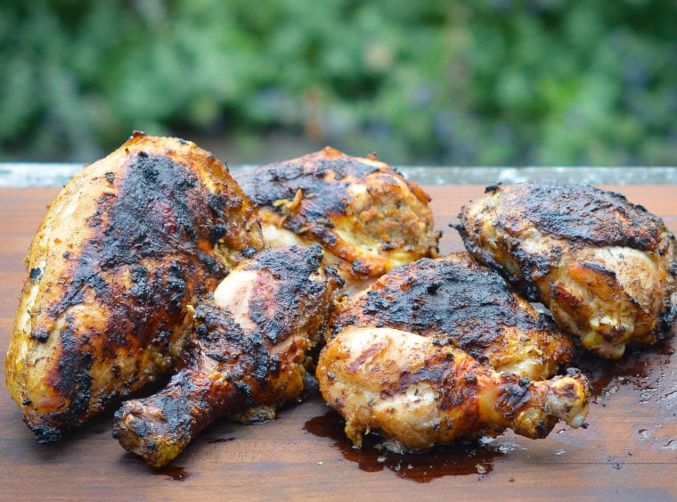

Jerk Chicken

Description
There are as many takes on jerk chicken in Jamaica as there are cooks on the island, but most share the same
method: Chicken is coated in a seasoning mixture dominated by spices and chiles, then grilled.
Ingredients
- 1 medium chopped onion, coarsely chopped
- 3 medium scallions, chopped
- 2 Scotch bonnet chiles, chopped
- 2 garlic cloves, chopped
- 1 tablespoon five-spice powder
- 1 tablespoon allspice berries, coarsley grounded
- 1 tablespoon coarsely ground pepper
- 1 teaspoon dried thyme, crumbled
- 1 teaspoon freshly grated nutmeg
- 1 teaspoon salt
- 1/2 cup soy sauce
- 1 tablespoon vegetable oil
- Two 3 1/2 to 4-pound chickens, quartered
Directions
Preperation:
- In a food processor, combine the onion, scallions, chiles, garlic, five-spice powder, allspice, pepper,
thyme, nutmeg and salt; process to a coarse paste.
- With the machine on, add the the soy sauce and oil in a steady stream.
- Pour the marinade into a large, shallow dish, add the chicken and turn to coat.
- Cover and refrigerate overnight.
- Bring the chicken to room temperature before proceeding.
Grilling:
- Light a grill
- Grill the chicken over a medium-hot fire, turning occasionally, until well browned and
cooked through, 35 to 40 minutes.
- Transfer the chicken to a platter and serve